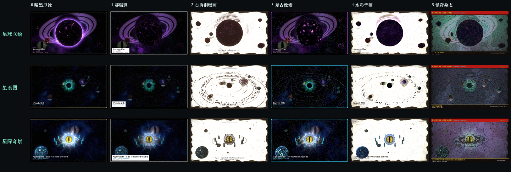
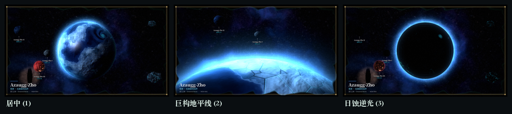
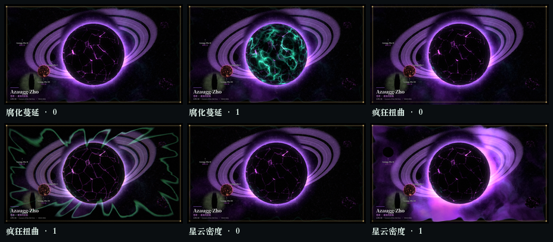
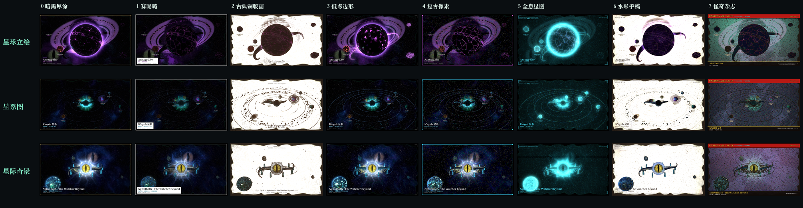
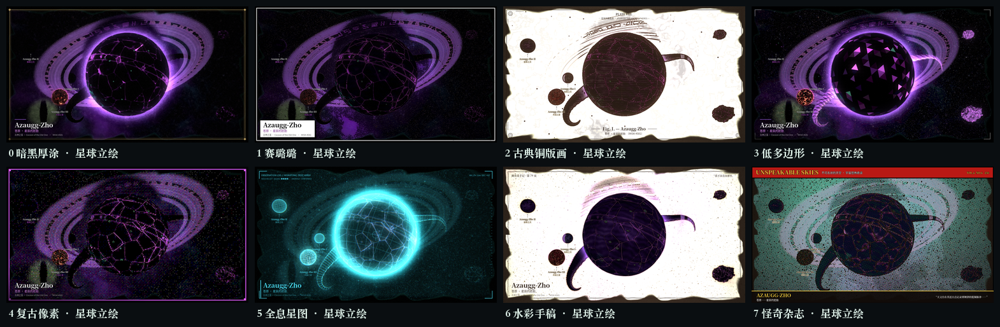
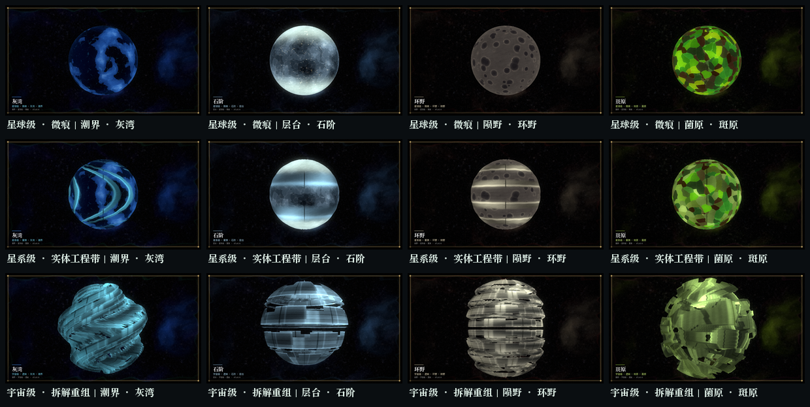
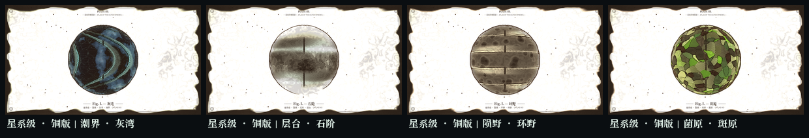
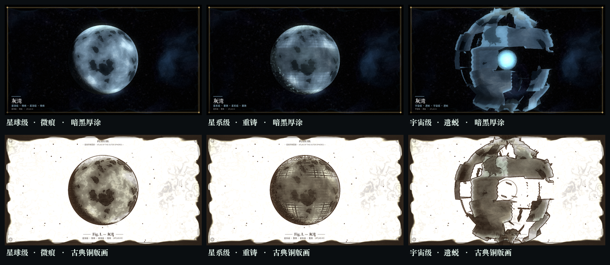
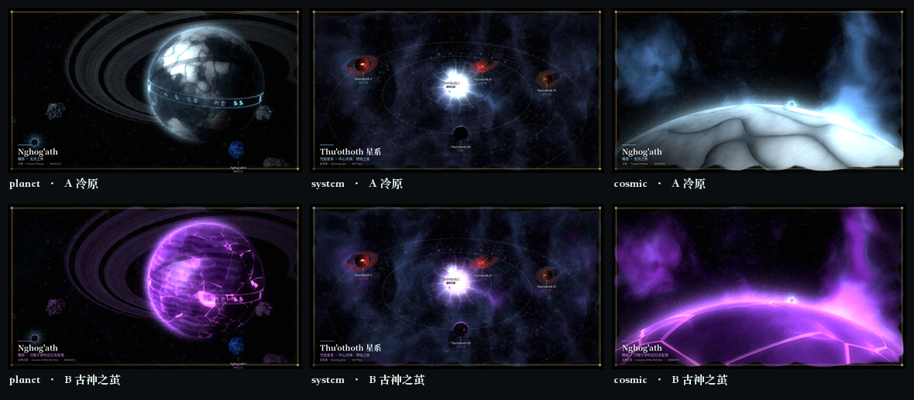
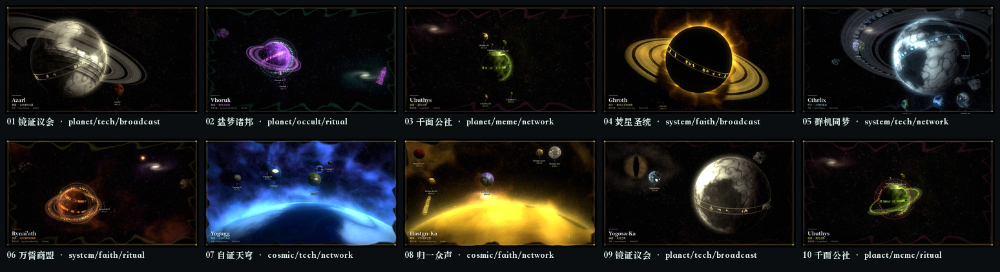

基线工程：docs/art/visual-generation/godot-base/ ｜ 引擎 4.7.2.stable ｜ 渲染 gl_compatibility ｜ 出图目录 godot-baseline/ ｜ 控制台 0 errors。
复现：GODOT=/Applications/Godot.app/Contents/MacOS/Godot → $GODOT --path godot-base --editor --quit → $GODOT --path godot-base -- --shots=/tmp/out --cfg=scene:0,style:2,seed:42。点击下方任意图可打开原尺寸。
裁剪后 · 6 种媒介 × 3 类场景 （当前，18 张全出）
固定 seed 1337。剩余媒介：暗黑厚涂／赛璐璐／古典铜版画／复古像素／水彩手稿／怪奇杂志；低多边形、全息星图已从数据表、UI 按钮与随机池移除（shader 内原编号分支保留为不可达死代码，通过 sid 映射维持其余六种的原作观感）。

总览 · 6 媒介 × 3 场景（18 格）点击开原尺寸

构图对照 · 居中 / 巨构地平线 / 日蚀逆光固定原型与色板，只差构图

保留的三项 · 腐化蔓延 / 疯狂扭曲 / 星云密度（0 ↔ 1）触手、眼睛、古神符文已归零且从 UI 移除
单张原图在 godot-baseline/trimmed/（27 张 + UI）。改动文件：scripts/data.gd、scripts/main.gd、scripts/generator.gd、shaders/common.gdshaderinc 注释。本机 Godot 4.7.2 实跑 0 errors / 0 warnings。
边界说明：「星环」「奇景类型」「卫星数」属于 UI 的「主体设定」分组、星际奇景场景与凝视之眼原型仍保留，未擅自扩权移除；godot-baseline/original/ 的原始 8 媒介编译产物也未改动。是否需要一并处理，由制作人定。
裁剪前对照 · 原版 8 媒介 × 3 类场景 （留痕，24 张）
同一 seed 1337，原版工程原生能力，未改一行代码。8 种媒介：暗黑厚涂／赛璐璐／古典铜版画／低多边形／复古像素／全息星图／水彩手稿／怪奇杂志；3 类场景：星球立绘／星系图／星际奇景。打开完整原作 · 可交互版 ↗

总览 · 8 媒介 × 3 场景（24 格）点击开原尺寸

星球立绘 · 8 媒介放大对照点击开原尺寸
单张原图在 godot-baseline/original/（24 张 + UI）。本机 Godot 4.7.2 实跑 0 errors / 0 warnings。魔改版工程完整归档在 archive-mutated/godot-base-mutated/，与此前所有 PNG 证据、设定文档一并保留，未删除、未改写历史。
以下为探索留痕 · 已退回 （不再作为方向，也不再复现）
留痕：具名科幻工程参考 × 星球原型 （4 个世界 × 3 个等级，已退回）
制作人提示「从科幻作品找灵感，别自己瞎琢磨」后钉的具名锚点：Kardashev 1964、Dyson 1960、Niven《Ringworld》1970、Paul Birch 1982 轨道环与壳世界。三档＝星球级自然球微痕（全域照明、无盈亏）／星系级少数几条连续实体工程带（螺旋堤·水平台地·同心环墙·胞格板，无经纬网格）／宇宙级球壳被切成大弧带并逐层拉开错转（不透明实体金属、有解析明暗与厚度边，不是半透明荧光球、不是散落薯片）。参考与禁令见 SCI-FI-REFERENCES.md ↗ · 原型原理 ↗

4 原型 × 3 等级（同 seed 4242）横向看四个世界，纵向看三档递进 · 点击开原尺寸

星系级四原型 × 古典铜版画证明原作后期管线完整保留
三档改造的方向／方法／可见效果均不同：星球级顺应自然（场不改、全域照明、无盈亏）／星系级连续实体工程带（按原型分螺旋堤·水平台地·同心环墙·胞格板，带宽连续、有厚度边与少量大型接缝，没有等间距经纬网格）／宇宙级把球壳切成整圈大弧带、逐层径向拉开并错转（不透明金属实体、解析明暗、断口厚度高光、桁架开口，四种带向互不相同）。铜版下排线描的是实体带的轮廓，不再是网格。本机 Godot 4.7.2 实跑 0 errors。
前一版：单原型 + 三档改造 （已被上面的二维方案取代）
制作人设定：同一颗母星、同一个观察位置、同一个半径，只有改造程度在变。星球级＝地表微量改造，从太空几乎看不出；星系级＝地表翻天覆地重铸，痕迹巨大张扬；宇宙级＝文明已脱离母星，母星被拆成看不出是行星的奇观。不使用原作的 scene / composition / 11 个地表原型 / 另放奇景物体。设定全文见 TERRAFORM.md ↗

三档改造 × 暗黑厚涂／古典铜版画点击开原尺寸
保留原作管线：噪声库、解析光照、天空、4 SubViewport + bloom + 8 媒介后期、装帧、确定性出图。新写：world_terraform.gdshader / world_core.gdshader / generator.gd:_build_terraform()，terraform>=0 时完全绕开原作三套视角。下排铜版证明媒介仍生效：工程网格被排线译成制图感，纸白底与装帧完整保留。本机 Godot 4.7.2 实跑 0 errors。
前一版：用镜头尺度表现层级 （已被上面的改造设定取代）
不做城市、机构、记录、灯火、证言、契约——天体图承载不了，至少现在不做。world.md §36：层级表示影响与反制范围，不是按人口展开的地图。所以三档是「边界闭合的单一对象 → 多个对象 + 通路 → 边界消融的场」。tier_expression.py 固定种子与色板，只改 tier，并跨两个蓝本交叉，不改一行 Godot 代码。

三档层级 × 两个蓝本（控制变量）点击开原尺寸
低频结构差：同 tier 跨蓝本 10.92 ｜ 同蓝本跨 tier 43.76 ｜ 跨 tier 且跨蓝本 43.77 → 层级差异约为蓝本差异的 4 倍，层级成为主导视觉维度。玩家先读出「一个世界 / 一片星系 / 整个法则场」，再分辨具体文明。详见 FOUNDATION.md §12。
前一版验证：不同世界如何生成 （结论已被 §12 收窄）
输入是 data/civilization_profiles.csv 的八个蓝本（层级 / 四范式 / 传播 / 组织 / 稳定），由 world_identity.py 推导原作参数，不改一行 Godot 代码。10 张 = 8 蓝本 + 同蓝本第二实例 + 改一个 CSV 字段的探针。看推导表 ↗

八个文明蓝本 + 两个验证实例点击开原尺寸
验证结论（否证）：A 八个蓝本可辨 — 部分成立，但差异主要来自构图／环／色板，不是文明身份；两个不同蓝本的低频结构差最小只有 9.37。
B 同蓝本两实例家族相似 — 修正实现后成立（01/09），但比值 0.69，不够稳。C 同 seed 复现 — 通过（逐字节相同）。D 改 CSV 一个字段画面跟着变 — 通过（03 → 10）。
⇒ 只把 CSV 映射到原作现有参数不成立：原作参数空间里没有「城市／机构／记录／灯火／证言／契约」这一层。下一步要在生成层新增「文明痕迹」，不是在 composition / rings / count 里继续凑。详见 FOUNDATION.md §11。